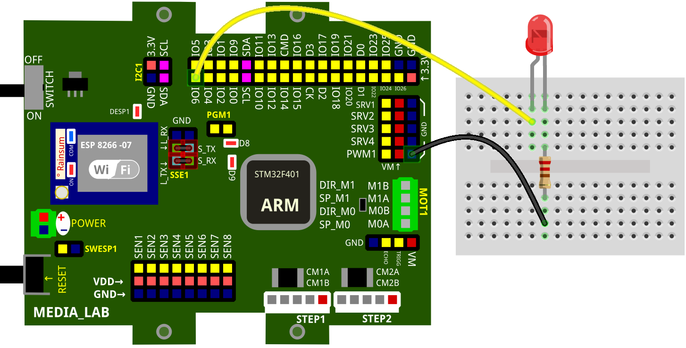
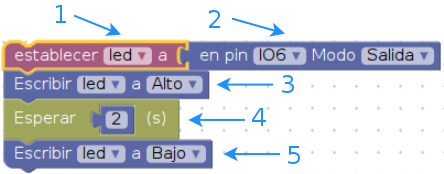

1. SALIDAS DIGITALES¶
En éste ejemplo un led será encendido durante un par de segundos para luego ser apagado.
1.1. Conexión física¶

1.2. Programa en blockly¶

1.2.1. Explicación de programa¶
En la imagen se numeran los bloques para luego ser explicados como sigue:
- Los pines digitales son manejados como objetos, así que debe ser iniciado como una variable con un identificador (nombre), se sugiere un nombre explícito como en éste caso (led).
- Aquí se ubica el nombre del pin correspondiente a la conexión física en la placa, además, permite definir el pin como una entrada o como una salida digital. (Compare la imagen de la conexión física con la del código blockly, notará que ambas se refieren al pin IO6).
- Ya definido el pin (led) es hora de darle un estado, en éste caso es alto. Cuando se refiere a ALTO quiere decir que envía un 1 lógico a el pin (led), en lógica positiva indica que la presencia de energía estimula a el led a encenderse.
- La permanencia en un estado depende de las transiciones, en éste caso pasar de un estado a otro estado depende del tiempo, éste bloque permite que se permanezca en un estado por determinados segundos.
- Siendo éste el mismo bloque que está en 3 se ha indicado que pondrá el led en bajo, es decir, el led será apagado, terminando así con el programa.